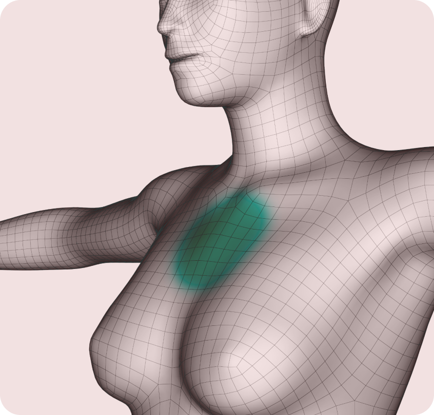

가슴성형
모양, 촉감, 안전성, 크기 까지 완벽하게!
셀러블153 가슴성형
나만의 아름다움을 찾아 보여주고 싶은 셀러블 153 가슴성형
가슴성형 기본 정보
가슴성형 대상
-
수술시간1~ 시간
-
치료방문1회~2회
-
마취방법전신마취
-
회복기간3 ~ 5일
-
입원당일 퇴원
-
실밥제거없음. 필요시 7일째
- 기존에 리프팅 수술 후 효과가 없으셨던 분
- 심한 볼처짐, 턱선 무너짐, 입가주름, 팔자주름, 세로 목주름 개선
- 실제거, 필러제거 등 이물질 제거와 함께 하고 싶은 분
- 복합적인 처짐을 가지고 있는 중장년층
- 또래보다 나이들어보이는 얼굴이 콤플렉스인 분
- 윤곽, 양악수술 후 처짐으로 리프팅을 고민하는 분
나에게 꼭 맞게, 셀러블153 가슴성형
특정한 절개 방법, 수술 방법을 강요하지 않고 나에게 맞는 수술법으로 가슴성형 가슴성형
및 재건 전문 병원에서 다년간 풍부한 경험을 통해 나에게 딱 맞는 방법으로 진행합니다.
및 재건 전문 병원에서 다년간 풍부한 경험을 통해 나에게 딱 맞는 방법으로 진행합니다.
셀러블153 가슴성형의 특징
-
완벽한 DA디자인
-
빈틈없이 꽉찬 가슴핏
- 셀러블153 가슴성형 수술 전/후 정밀진단
-
-
가슴성형 전/후 유방
및 보형물 정밀 진단- 셀러블153
- 안심 유방검진
- 최첨단 초음파 장비로 개개인의 건강상태와
- 신체조건을 고려하여 수술 전/후 가슴의 상태를 정밀하게 파알할 수 있습니다.
-
A.I 기술을 이용한 Live 4D
가상 성형 VR 체험- 체형 분석을 통한 맞춤형 상담 후 가상 성형 시스템으로 수술 후
- 가슴 모양을 3D 이미지로 예측하여 수술의 만족도를 높여드립니다.

-
-
내몸에 딱 맞는 보형물로개인 니즈에 맞는 보형물 사이즈 선택
-
-
멘토 엑스트라
- 자연스러운 모양과 라인
- 한국인 체형 최적화 보형물
- 리플링, 구형구축 발생확률 감소
- 높은 충전율 풍성한 볼륨감
- 외피, 내피 FDA승인 보형물
-
멘토 스무스
- 자연스럽고 부드러운 촉감
- 매끄러운 표면으로 높은 유동성
- 유방조직이 적거나 얇은 피부에 적합
- 외피,내피 FDA승인 보형물

-
모티바
- 모티바 - 중력에 반응하는 움직임
- 구형구축예방 실크표면
- 균일 외피 부작용↓ 촉감↑
- 블루실 안전상태 확인 가능
-
세빈
- 높이, 넓이 다양한 라인업
- 8겹의 외피(shell)로 안전합
- 강한충격에 형태유지 완전성
- 피부조직과 유사한 나노스킨 촉감
-
-
겨절도 밑절도, 티안나게 흉터 걱정 없이최소절개 3중 봉합 테크닉+집중 흉터관리로 말끔하게
-
겨절 6개월 후밑절 6개월 후흉터 방지에 집중한 셀러블153만의 비법 셀러블153 가슴성형 수술 후 흉터 관리 라인
-
더마본드필요시 레이저와 주사 시술 후에도 남아있는
흉터는 수술을 통해 개선합니다. -
흉터 연고 처방흉터를 완화시켜주는 흉터 연고
처방으로 홈케어가 가능합니다. -
흉터 레이저피부 같은 곳까지 케어하여
붉은 흉터를 개선합니다. -
흉터 주사피부 재생 능력을 증가시키고 콜라겐을
활성화시켜 튀어나온 흉터를 케어합니다. -
흉터 수술필요시 레이저와 주사 시술 후에도 남아있는
흉터는 수술을 통해 개선합니다.
-